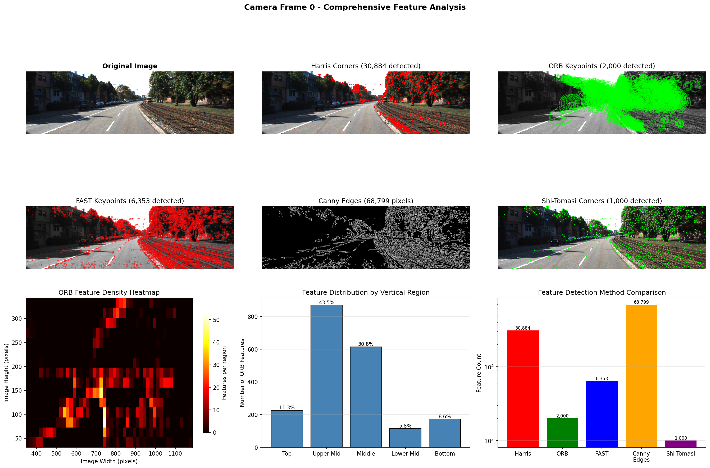
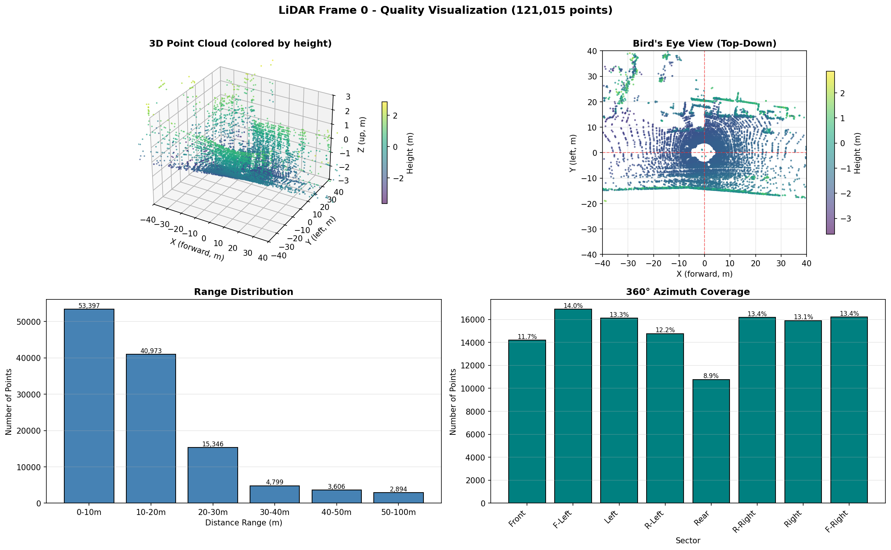
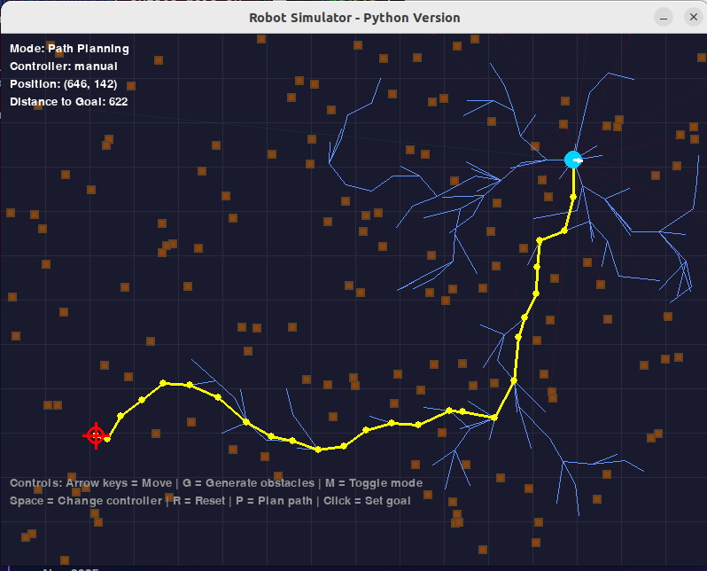
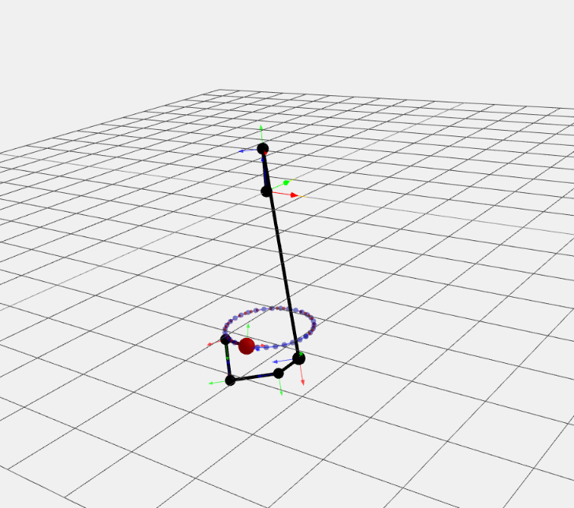
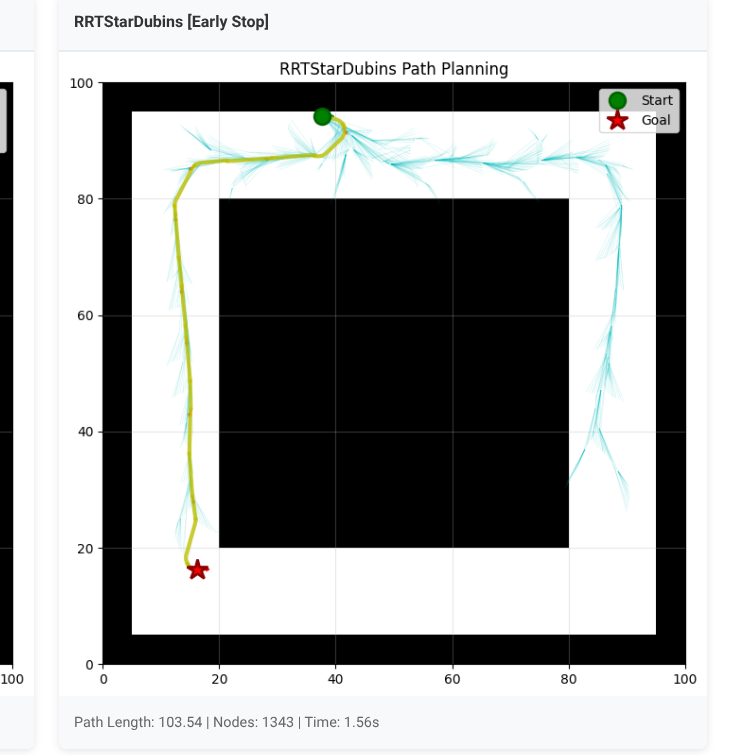
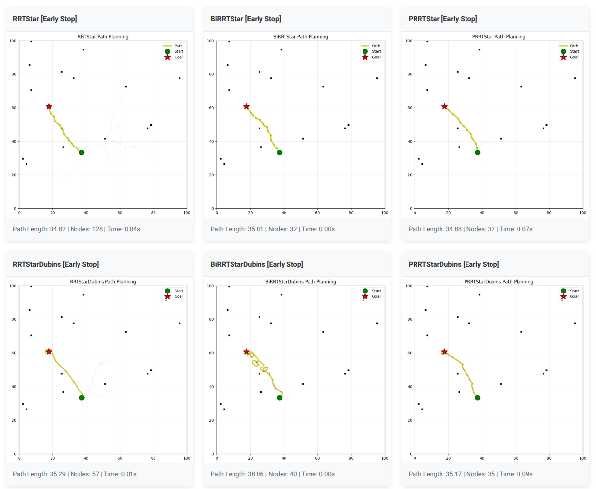

Apr 2026
Course: EECE 5554 Robot Sensing and Navigation, Northeastern University
Apr 2026
Course: CS 5180 Reinforcement Learning, Northeastern University
Jan 2026
Built a Camera/LiDAR/GPS sensor fusion pipeline on the KITTI dataset — synchronizing multimodal streams at 10Hz (3ms jitter), implementing calibrated projection with 85% visibility and <5px reprojection error, and automating quality gates across temporal, spatial, and radiometric dimensions. Architected for extensibility toward downstream object detection and tracking.


Dec 2025
Built a Python navigation simulator integrating RRT path planning with a hybrid adaptive multi-gain P-controller and 360° LiDAR perception for real-time collision avoidance, achieving 90%+ goal-reaching success in obstacle-dense environments.

Nov 2025

Nov 2025


Jul 2021 – May 2024
Giottus Technologies Pvt Ltd., Chennai, India
Distributed Systems · Platform Architecture · Engineering LeadershipLeadership & Org Impact
Systems Design & Scale
Implementation & Execution
Dec 2018 – Nov 2021
CloudFabrix Software Pvt Ltd., Hyderabad, India
ML Pipelines · AIOps · Experimentation PlatformML Platform & Tooling
Pipelines & Anomaly Detection
Forecasting & Monitoring
Nov 2017 – Nov 2018
Geazy Technologies LLP, Chennai, India
Python, C++, Java, JavaScript, ROS2, Gazebo, OpenCV, Scikit-Learn, PyTorch
LangChain, RAG, Prompt Engineering, GPT-4, DALL-E, Hugging Face Transformers
LiDAR Segmentation, Sensor Fusion (Camera/LiDAR/GPS), Point Cloud Processing, EKF-SLAM, Particle Filter, Motion Planning (RRT/RRT*)
WebSockets, gRPC, REST APIs, Kafka, RabbitMQ, Spring Boot, Microservices, JWT/OAuth/RBAC
MySQL, PostgreSQL, MongoDB, Redis, SQL
AWS (EC2, Lambda, S3), Docker, Kubernetes, Jenkins, Git, Linux, Prometheus, Grafana, ELK Stack